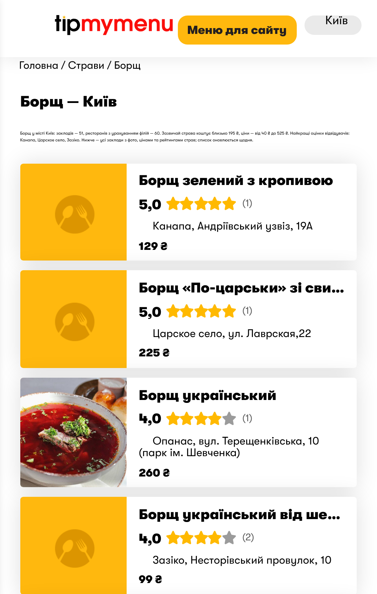

Скільки коштує борщ у Києві?
Відповідь — у наступних слайдах →
1/5
Відповідь — у наступних слайдах →
Звичайна ціна борщу в Києві

Пиши в коментарях 👇
tipmymenu.com · посилання в біоДЛЯ КАФЕ Й РЕСТОРАНІВ
Сторінка закладу · QR-меню на столи · меню для сайту
За назвою закладу і за стравами
Гість наводить камеру — і бачить страви з фото й цінами. Без застосунків і без оплати.
Вкажіть посилання в кабінеті — бот перенесе страви, фото й ціни. Не треба вносити все заново.
tipmymenu.com/uk/restaurants/about~288 ₴
~250 ₴
Реальні ціни з меню:
ціни на 26.11.2026 · tipmymenu.com
Зазвичай —
76 закладів у Києві
А де найсмачніші? 👇